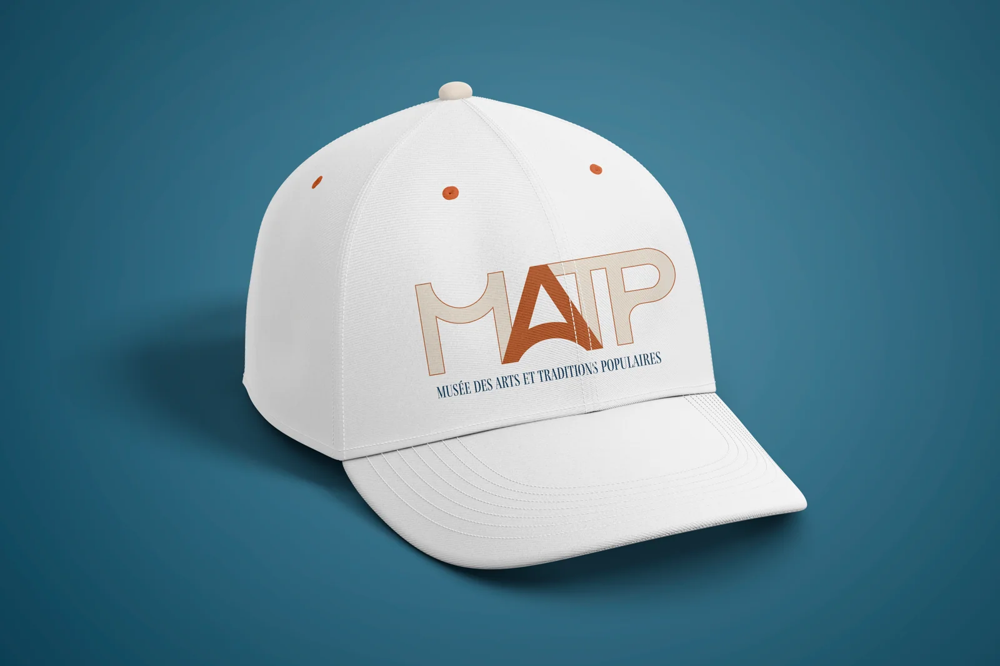
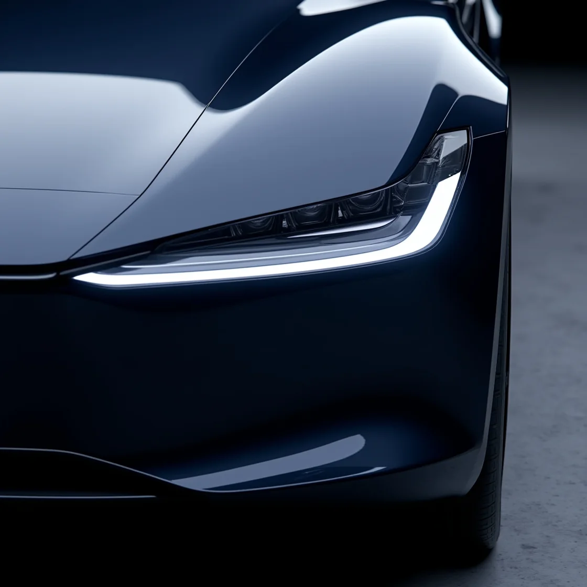
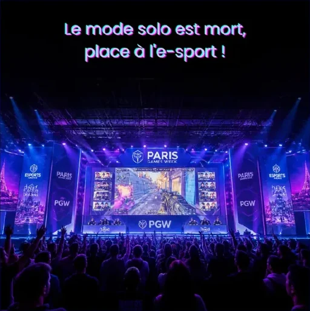
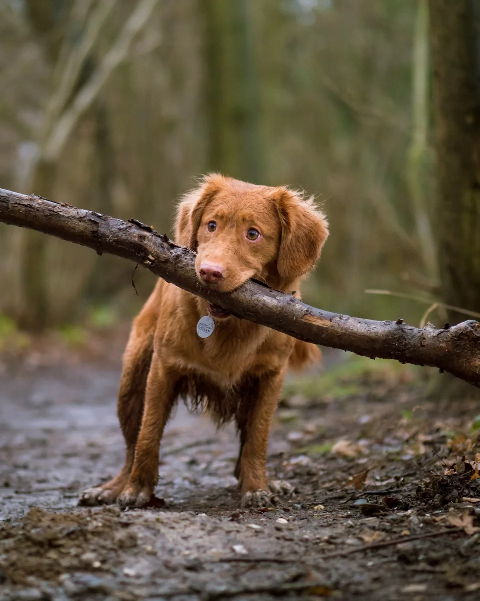

Hey,c'est Cloé.
Com, contenu & communauté · Toulouse
Je fais grandir les marques et leurs communautés : sur les réseaux, en print et sur le terrain.
Mes terrains de jeu
Social mediaStratégieContenusCommunautéReels & storiesCréation graphiqueIdentité visuelleDirection artistiquePrintVisuels produit & IAInfluence & affiliationPartenariatsContrats
Suivi & reportingPhoto & vidéoShootingRetoucheMontageRédactionArticles & SEOEmailingLinkedIn & ghostwritingCom interne & événementielSupportsTeam buildingSalons
Projets pro

Labo
Mes projets d'école et mes projets perso : identités visuelles, stratégies, social ads, un site, un podcast… et des logos pour mes proches.
 IKEA, version psychédéliqueIdentité visuelle
IKEA, version psychédéliqueIdentité visuelle
Musée des Arts et TraditionsIdentité visuelle KineticBranding & stratégie
KineticBranding & stratégie
Hyros by TeslaLancement de produit
Paris Games WeekSocial ads
Entre PawtesSite web Book, Food & CréaStratégie & gamification
Book, Food & CréaStratégie & gamification Les clés du voisinPodcast
Les clés du voisinPodcast- Voir les 13 projets du Labo→Et aussiRed Bull, Mariage Frères, Trois Sœurs, des logos…
À propos
Montagne, van et running : j'aime les marques qui ont une vraie communauté, et les faire grandir.
Mon parcours